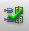
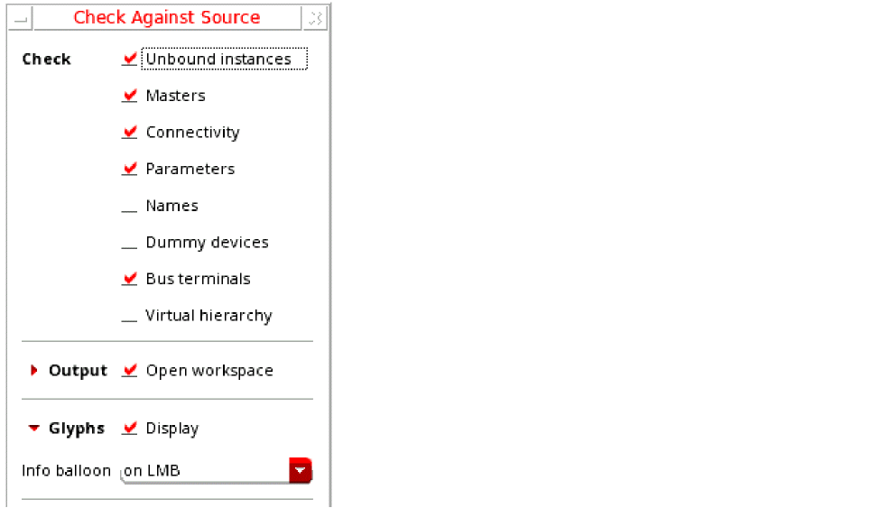
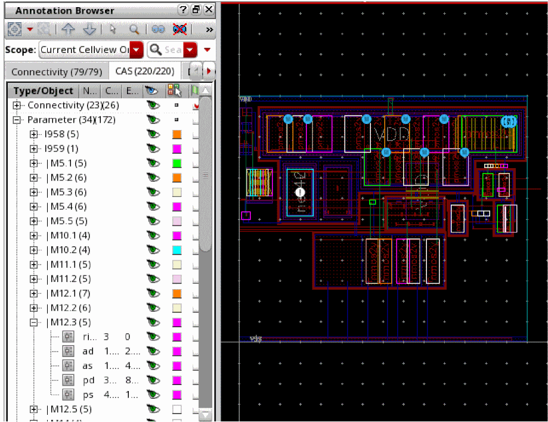
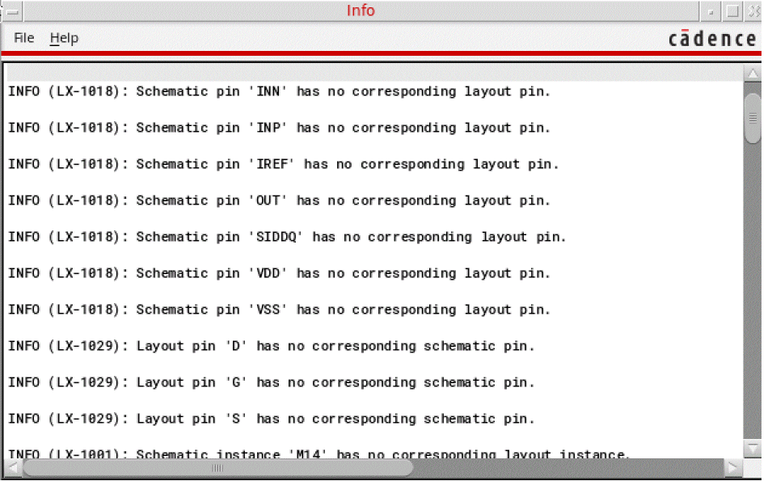

Checking a Layout Against a Schematic
To check the components in your layout view against the schematic:
-
From the layout window menu bar, choose Connectivity – Check – Against Source.
The Check Against Source command is also available through the Check Against Source icon ( ) in the Layout XL toolbar.
The Check Against Source form is displayed.
 - In the Check group box, choose the differences you want to report.
- In the Output group box, choose whether you want to open the CAS workspace or the Info window, or both, and specify whether you want to overwrite the log file from a previous CAS run, or append the results to the log file.
- Specify the name of the log file in which the report of the CAS run can be logged.
-
Click OK to run the check.
The schematic is extracted and the CAS report is generated and displayed based on the Output options that you selected.-
If Open workspace is selected, Layout XL opens the CAS workspace to display the generated markers in the Annotation Browser CAS tab.
If Display info window is selected, the schematic versus layout differences for the selected checks are reported in an information window. 
- If Overwrite log file is selected, the specified log file is cleared of all the information from the last CAS run and updated with the information from the new run.
- In the CAS workspace, each layout instance that has a marker generated in the CAS tab of the Annotation Browser also displays a canvas glyph that provides a visual cue to the type of mismatch it has with the source. See Canvas Glyphs to Find CAS Tab Markers.
-
If Open workspace is selected, Layout XL opens the CAS workspace to display the generated markers in the Annotation Browser CAS tab.
Canvas Glyphs to Find CAS Tab Markers
In addition to generating unique icons in Annotation Browser to make it easy for the CAS tab markers to be spotted, Layout XL creates unique canvas glyphs to highlight the associated instance on the layout canvas. Click each generated glyph or hover the mouse pointer over the glyph to see the associated information balloon, detailing the kind of mismatch and the current and expected values for the layout object.
Depending on the type of marker generated for the instance, the canvas glyph representation on the canvas varies. Here are a few examples:
Example 1: Connectivity mismatch glyph
This glyph indicates connectivity mismatch on top-level pins and global nets, mismatched or missing terminals and instance terminals, and unbound nets in the layout. For more information about the mismatch, see the Check Against Source form.
Example 2: Parameter mismatch glyph
This glyph indicates issues with CDF parameters (and properties) set on the schematic and the layout views. For more information about the mismatch, see the Check Against Source form.
Example 3: Binding mismatch glyph
This glyph indicates layout instances that are not bound to the schematic instances, and the schematic instances that are not yet generated in the layout. For more information about the mismatch, see the Check Against Source form.
To help analyze the markers on the canvas and to help editing the layout, Layout XL enables you to pin the information balloons associated with the markers. This allows for the information related to specific markers to be available on the canvas while you explore the markers for other related objects.
Related Topics
Checking a Layout Against a Schematic
Pinning a CAS Glyph Information Balloon
Return to top